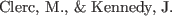
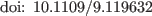

- Clerc KennedyClerc Kennedy2002
-
clerc_pse_2002

2002.
The particle swarm - explosion, stability, and
convergence in a multidimensional complex space The particle swarm -
explosion, stability, and convergence in a multidimensional complex
space.
Evolutionary Computation, IEEE Transactions
on6158-73.
- Kennedy EberhartKennedy Eberhart1995
-
kennedy_pso_1995
1995.
Particle swarm optimization Particle swarm
optimization.
( 4, 1942-1948 vol.4).
- Monson SeppiMonson Seppi2006
-
monson_ad_2006
2006.
Adaptive diversity in PSO Adaptive diversity in
pso.
( 59-66).
Seattle, Washington, USAACM.
- SpallSpall1992
-
spall_multivariate_1992
1992.
Multivariate stochastic approximation using a
simultaneous perturbation gradient approximation Multivariate stochastic
approximation using a simultaneous perturbation gradient
approximation.
IEEE Transactions on Automatic
Control373332-341.

Jesse van den Kieboom
2014-02-26